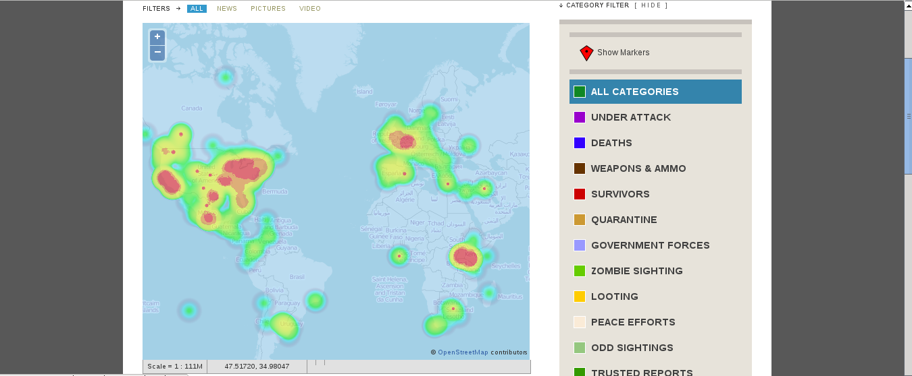

Getting Started
About
The RHTP heatmap is a plugin for that generates a heatmap from active reports and embeds it in the main page. It allows users to toggle between normal and heatmode mode. The heatmap will update based on what category the user has selected. This plugin is a modification of the original Ushahidi Heatmap plugin by dkiboa. It can be found here
This plugin also works with https://github.com/TStream/Ushahidi_Select_Multiple_Categories
Installation
- Copy the entire /RHTP_Heatmap/ directory into your /plugins/ directory
- Change the premissons on the heatmap directory and all its contents to 755
- Activate the plugin.